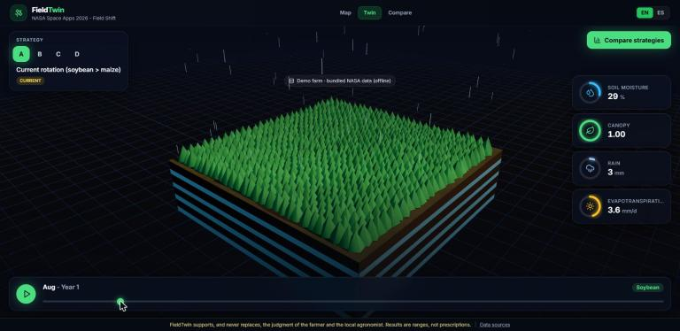

NASA Space Apps Challenge 2026 · Field Shift: Adapting Farms with NASA Data
FieldTwin
A digital twin of your field, built from NASA data, to test crop rotations before you plant them.
The problem
Rotations were designed for a climate that no longer exists
Weather is shifting
Hotter summers, less predictable rain and longer dry spells change when crops are exposed to stress.
Evidence is scattered
Satellite data, soil surveys and crop history live in different portals that farmers rarely use.
Single numbers mislead
A farmer needs to know when soil is bare, which months are risky, and how sure the estimate is.
The solution
Click a field. Compare rotations. See the uncertainty.

- Pick any point, the current rotation and your priorities
- The twin simulates the current rotation plus 3 alternatives
- P10–P90 ranges over 30 years and warming scenarios
- Bare-soil calendar, risky months, evidence, gaps and risks
- Animated 3D field, English and Spanish, works offline
How it works
Physics first, AI where it earns its place
NASA data
NASA POWER daily weather and root-zone wetness, soil surveys, crop history
Digital twin
FAO-56 water balance, crop phenology, RUSLE-lite erosion, nitrogen and soil organic matter
Ensemble
30 historic years plus +1.5 °C and +2.5 °C warming give P10–P90 ranges
AI emulator
PyTorch network on a laptop GPU with 90% conformal intervals for instant what-ifs
Local narrator
Ollama LLM that may only cite numbers produced by the twin
NASA data and validation
Every number traces back to a real dataset
Used in this demo
NASA POWER daily weather 1995–2024 and climatology, POWER root-zone soil wetness (GWETROOT), USDA SSURGO, ISRIC SoilGrids, USDA Cropland Data Layer.
Ready, pending credentials
SMAP, GPM IMERG, MODIS NDVI, SRTM and GRACE through Google Earth Engine. Not used in the reported results.
0
Iowa: twin soil moisture vs NASA POWER root-zone wetness (r)
0
Bajío, Mexico: same check (r)
2010–24
Iowa rotation taken from real CDL corn–soybean history
Demo and key results
Trade-offs made visible


Iowa, USA
Adding winter rye cuts erosion from 13.6 → 10.2 t/ha/yr and bare soil from 261 → 158 days, but the cash-crop yield index falls from 76.7 to 45.9.
Bajío, Mexico
A winter oats double crop would need about 259 mm/yr of irrigation versus 17 mm today, so it scores 2 against 53 for the current rotation.
Not a single winner
FieldTwin shows soil benefits against yield and water costs, so the farmer can decide.
Impact and next steps
Decision support, never a replacement for the farmer
Impact
Fast, transparent exploration of adaptive rotations. Local, private and offline-capable.
Next
Enable Earth Engine layers, calibrate with field yields and local prices, add crops and regions.
AI disclosure
Code written with AI coding assistants under human direction. Local Ollama narrator. Emulator trained by the team. Screenshots are real captures of the app.